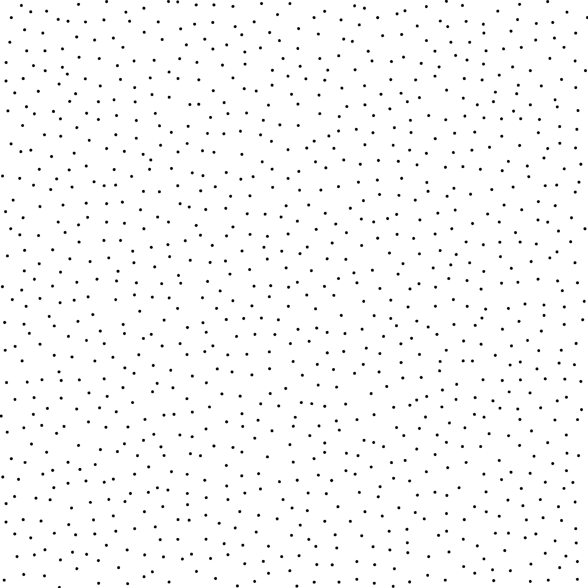

Sampler ART [ANH*17]
Files
src/samplers/SamplerART.hpp src/bin/samplers/ART_2dd.cpp.cpp
Description
The sampler from [ANH*17]
For a more precise description of this sampler and its performances in terms of aliasing and discrepancy, please refer to the following web bundle https://liris.cnrs.fr/ldbn/HTML_bundle/index.html.
License
See author’s page.
Execution
Parameters:
[HELP] -o [string=output_pts.dat] Output file -m [int=1] Number of poinset realisations -n [ullint=1024] Number of samples to generate --silent Silent mode -h Displays this help message -d File containing the tiles offsets
To generate a 2D point set of 1024 samples with a art distribution, we can use the following client line command:
./bin/samplers/ART_2dd -d ../../data/ART/table.dat -n 1024 -o toto.dat
Or one can use the following C++ code:
PointsetWriter< 2, double, Point<2, double> > writer; writer.open("toto.dat"); Pointset< 2, double, Point<2, double> > pts; SamplerART s; unsigned int param_nbsamples = 1024; s.generateSamples< 2, double, Point<2, double> >(pts, param_nbsamples); writer.writePointset(pts); writer.close();
Results
./bin/samplers/ART_2dd -d ../../data/ART/table.dat -o art_1024.edat -n 1024
File
art_1024.edat
Pointset

{kind=link}
Fourier

./bin/samplers/ART_2dd -d ../../data/ART/table.dat -o art_4096.edat -n 4096
File
art_4096.edat
Pointset

Fourier